[3-4] 按键控制LED / 光敏传感器控制蜂鸣器 — 学习笔记
- 课程：江协科技《STM32入门教程-2023版 细致讲解 中文字幕》
- 视频：BV1th411z7sn?p=8，33:05
- 素材：248 帧关键帧（每 8 秒，宽 1280px）+ PP-OCRv4 画面硬字幕 OCR（448 段）；关键截图 14 张随笔记收录（源图在
vidsum_out/stm32_p8/frames/，站内图片在assets/images/stm32-08/） - 字幕情况：该集 B 站没有 CC/AI 字幕，文本由画面烧录的中文字幕 OCR 得到（source=subtitle-ocr），偶有错字已按画面校正。
一句话结论
这一集是 GPIO 输入部分的程序课：先用「按键控制 LED」把按键输入、模块化封装（LED.c/h、Key.c/h）、按键消抖和状态取反走一遍；再用「光敏传感器控制蜂鸣器」练习第二种输入设备（光敏模块 DO 输出）和 Buzzer.c/h、LightSensor.c/h 的封装，最后总结 GPIO 的使用三步与模块化/注释规范。
0. 本集的两个工程
| 工程 | 硬件 | 现象 |
|---|---|---|
3-4 按键控制LED |
2 个按键（PB1、PB11，一端 GPIO 一端 GND）+ 2 个 LED（PA1、PA2，一端 GPIO 一端 VCC，低电平点亮） | 按键 1 点亮 LED1、按键 2 熄灭 LED1；演示程序用状态取反（按一下翻转一次） |
3-5 光敏传感器控制蜂鸣器 |
蜂鸣器（VCC/GND + 控制脚 PB12）+ 光敏传感器模块（VCC/GND + DO 接 PB13） | 遮住光敏电阻 → 蜂鸣器响；拿开 → 不响 |
1. 工程 1：硬件接线
- 两个按键分别接在 PB1、PB11：按键一端接 GPIO、另一端接 GND（PPT 里的第一种接法）→ 所以要配置上拉输入，按下时读到 0。
- 两个 LED 分别接在 PA1、PA2：LED 一端接 GPIO、另一端接 VCC，是低电平点亮的接法。
- 按键、LED 的数量和连接的端口都是随意的，具体接多少个、接哪些端口看需求。
- 面包板接线：把两个按键插在 PB1/PB11，两个 LED 插在 PA1/PA2。
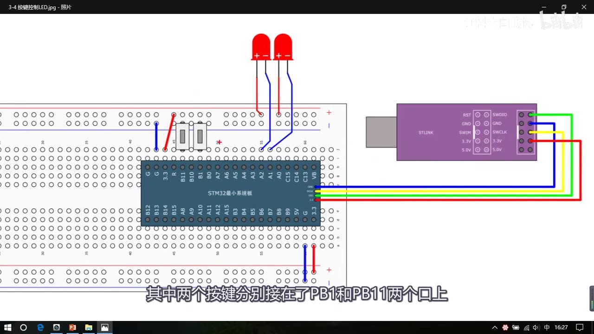
图 1：3-4 按键控制LED 接线图——两个按键接 PB1/PB11（一端接 GND），两个 LED 接 PA1/PA2
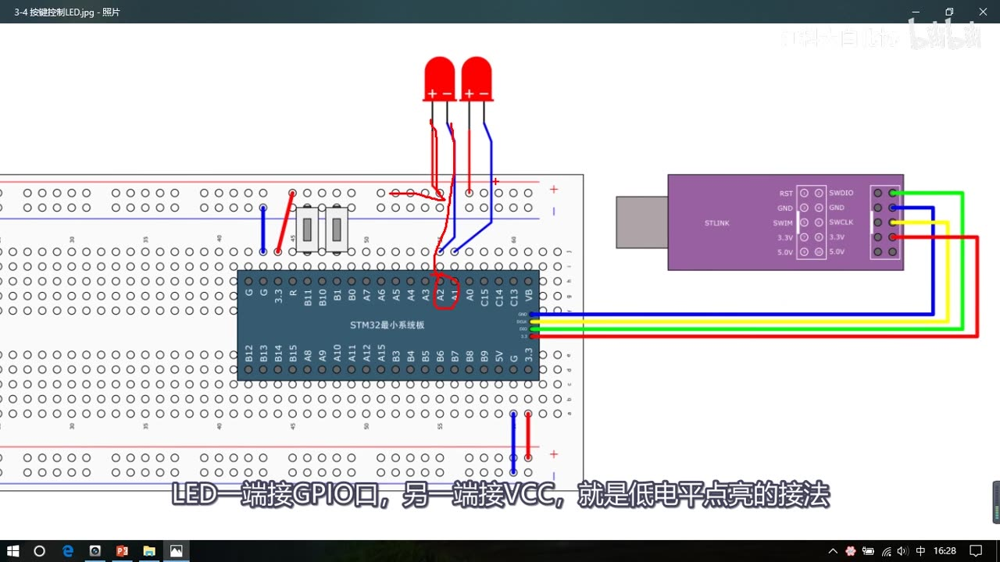
图 2：LED 的接法——一端接 GPIO、另一端接 VCC，低电平点亮（红圈为 PA1/PA2）
2. 模块化编程：把驱动搬出主函数
- 问题：如果把 LED 和按键的驱动代码都混在主函数里，代码太乱、不容易管理、也不容易移植。
- 做法：驱动代码单独封装到
.c/.h文件里，这就是模块化编程（51 教程里讲过，本集直接操作）。 - 步骤：
- 工程文件夹下新建
Hardware文件夹，存放硬件驱动； - Keil 里打开工程管理（三个箱子的按钮），新建 Hardware 组并挪好位置；
- 魔术棒 → C/C++ → Include Paths，把 Hardware 文件夹加进头文件路径；
- 在 Hardware 组右键 → Add New Item：先建
LED.c（C File），再建LED.h（Header File）； 路径要选Hardware文件夹（可以直接在路径栏写\Hardware，比较省事），最后 Add。
- 工程文件夹下新建
.c文件第一行右键 includestm32f10x.h；.h文件加防重复包含的固定框架：
#ifndef __LED_H
#define __LED_H
/* 函数声明放这里 */
#endif
- 说明：
#ifndef __LED_H的意思是“如果没有定义 LED 这个字符串”，#define __LED_H就定义它，#endif与#ifndef配对；函数和变量声明放在这一对括号里；文件最后要以空行结尾。
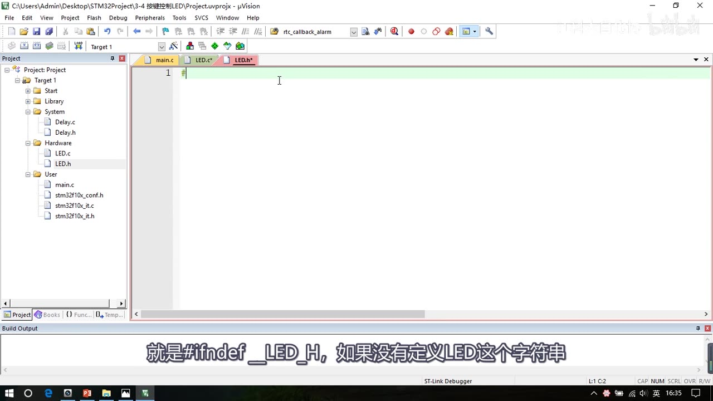
图 3：Keil 工程里新建 Hardware 组，以及 LED.c / LED.h 模块文件
3. LED 驱动模块（LED.c / LED.h）
LED_Init 初始化函数：
void LED_Init(void)
{
RCC_APB2PeriphClockCmd(RCC_APB2Periph_GPIOA, ENABLE); // 开启 GPIOA 时钟
GPIO_InitTypeDef GPIO_InitStructure;
GPIO_InitStructure.GPIO_Mode = GPIO_Mode_Out_PP; // 推挽输出
GPIO_InitStructure.GPIO_Pin = GPIO_Pin_1 | GPIO_Pin_2; // 同时选中 PA1、PA2
GPIO_InitStructure.GPIO_Speed = GPIO_Speed_50MHz;
GPIO_Init(GPIOA, &GPIO_InitStructure);
}
- 写代码时如果不出提示，按 Ctrl+Alt+空格 调出代码提示（选
GPIO_InitTypeDef等）。 - 编译下载后会发现：两个 LED 都亮了——因为 GPIO 配置好之后默认就是低电平，而 LED 是低电平点亮。所以在
LED_Init最后加一句：
GPIO_SetBits(GPIOA, GPIO_Pin_1 | GPIO_Pin_2); // 初始化后默认熄灭
- 说明：本笔记代码块为简化写法（省略了部分
#include、把短语句并到一行、省略部分大括号），实际写法以视频画面为准。
点亮/熄灭函数（4 个，也可以用参数合并成 LED_Set(哪个灯, 开/关)，灯少就直接写 4 个）：
void LED1_ON(void) { GPIO_ResetBits(GPIOA, GPIO_Pin_1); } // 低电平点亮
void LED1_OFF(void) { GPIO_SetBits(GPIOA, GPIO_Pin_1); } // 高电平熄灭
void LED2_ON(void) { GPIO_ResetBits(GPIOA, GPIO_Pin_2); }
void LED2_OFF(void) { GPIO_SetBits(GPIOA, GPIO_Pin_2); }
- 把这 5 个函数的第一行复制到
LED.h里声明（后面加分号），模块外部才能调用。 - 主函数测试：
#include "LED.h"
int main(void)
{
LED_Init();
while (1)
{
LED1_ON(); LED2_OFF(); Delay_ms(500);
LED1_OFF(); LED2_ON(); Delay_ms(500);
}
}
现象：两个 LED 交替闪烁。主函数变得非常简洁——初始化就是初始化、开灯就是开灯，不用再管底层参数，这就是模块化的好处。
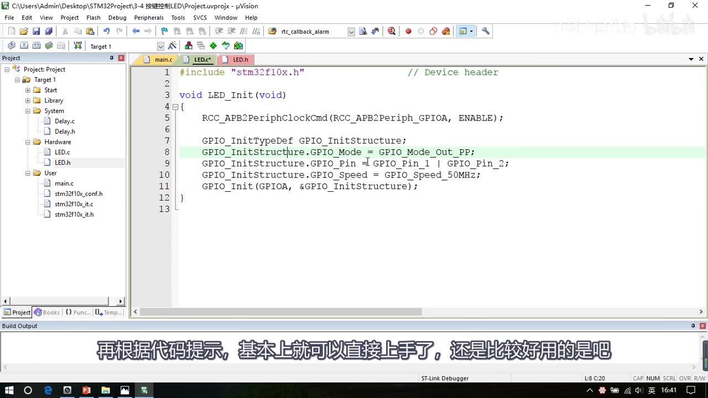
图 4：LED_Init 完整代码（GPIOA 时钟、推挽输出、Pin_1|Pin_2、50MHz、GPIO_Init）
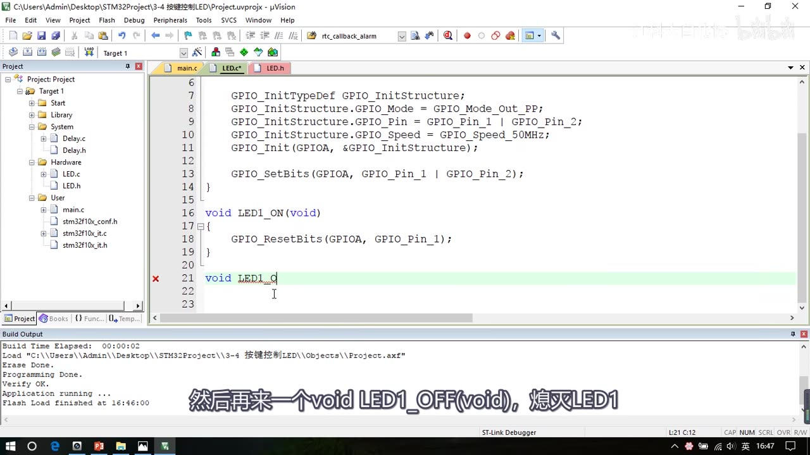
图 5：LED_Init 末尾用 GPIO_SetBits 设默认熄灭，并写 LED1_ON（ResetBits 点亮）
4. Key 驱动模块（Key.c / Key.h）
Key_Init：把两个按键端口（PB1、PB11）初始化为上拉输入：
void Key_Init(void)
{
RCC_APB2PeriphClockCmd(RCC_APB2Periph_GPIOB, ENABLE);
GPIO_InitTypeDef GPIO_InitStructure;
GPIO_InitStructure.GPIO_Mode = GPIO_Mode_IPU; // 上拉输入
GPIO_InitStructure.GPIO_Pin = GPIO_Pin_1 | GPIO_Pin_11;
GPIO_InitStructure.GPIO_Speed = GPIO_Speed_50MHz; // 输入模式下无用，但还是要填
GPIO_Init(GPIOB, &GPIO_InitStructure);
}
gpio.h 里的 4 个读函数（打开 gpio.h 看函数说明，对照位结构 PPT 很好理解）：
| 函数 | 作用 |
|---|---|
GPIO_ReadInputDataBit(GPIOx, GPIO_Pin) |
读取输入数据寄存器某一位的值，返回 uint8_t 高低电平 → 读按键用这个 |
GPIO_ReadInputData(GPIOx) |
读取整个输入数据寄存器，返回 uint16_t，每一位对应一个端口 |
GPIO_ReadOutputDataBit(GPIOx, GPIO_Pin) |
读取输出数据寄存器某一位，一般用于输出模式下看“自己输出了什么” |
GPIO_ReadOutputData(GPIOx) |
读取整个输出数据寄存器 |
Key_GetNum 读取键码 + 消抖：
uint8_t Key_GetNum(void)
{
uint8_t KeyNum = 0; // 默认 0：没有按键按下
if (GPIO_ReadInputDataBit(GPIOB, GPIO_Pin_1) == 0) // PB1 按下（低电平）
{
Delay_ms(20); // 按下消抖
while (GPIO_ReadInputDataBit(GPIOB, GPIO_Pin_1) == 0); // 等待松手
Delay_ms(20); // 松手消抖
KeyNum = 1;
}
if (GPIO_ReadInputDataBit(GPIOB, GPIO_Pin_11) == 0) // PB11 同理
{
Delay_ms(20);
while (GPIO_ReadInputDataBit(GPIOB, GPIO_Pin_11) == 0);
Delay_ms(20);
KeyNum = 2;
}
return KeyNum;
}
- 按键一般是松手之后才有动作，所以用
while卡住等待松手，保证一次按下只触发一次。 - Key.c 里用到
Delay_ms，需要#include "Delay.h"（否则会报fatal error: Delay file not found）。 - 两个函数的第一行同样复制到
Key.h里声明。
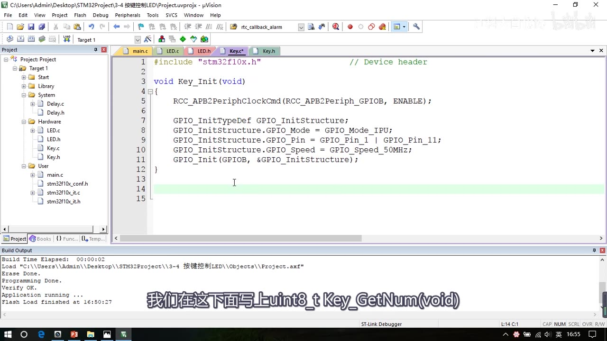
图 6：Key_Init 完整代码——GPIOB 时钟、GPIO_Mode_IPU 上拉输入、Pin_1 / Pin_11（拼写错误修正后）
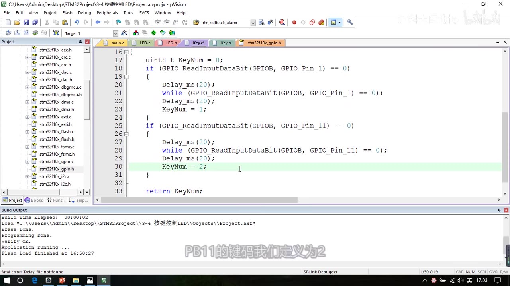
图 7：Key_GetNum 最终代码——PB1 / PB11 两段消抖，分别返回键码 1 / 2
5. 按键控制 LED（main.c）
- 主函数里定义一个全局变量 KeyNum 接键码返回值。
- 注意：虽然变量名都叫 KeyNum，但 main 里的是全局变量，
Key_GetNum里的是局部变量，两者作用域不同，不是同一个变量；函数内优先使用自己的局部变量。
写法①（直接控制）：
KeyNum = Key_GetNum();
if (KeyNum == 1) LED1_ON(); // 按右边按键 1 → LED1 点亮
if (KeyNum == 2) LED1_OFF(); // 按左边按键 2 → LED1 熄灭
写法②（状态取反，演示程序采用）：
void LED1_Turn(void)
{
if (GPIO_ReadOutputDataBit(GPIOA, GPIO_Pin_1) == 0) // 当前输出 0（低=亮）
GPIO_SetBits(GPIOA, GPIO_Pin_1); // 置 1 熄灭
else
GPIO_ResetBits(GPIOA, GPIO_Pin_1); // 置 0 点亮
}
主循环：
while (1)
{
KeyNum = Key_GetNum();
if (KeyNum == 1) LED1_Turn();
if (KeyNum == 2) LED2_Turn();
}
- 同样把
LED1_Turn/LED2_Turn的函数第一行复制到LED.h里声明（否则调用处会出现隐式声明警告）。 - 现象：按一下翻转一次——因为
LED_Init末尾已经把 LED 设成默认熄灭，所以初始状态下第一次按下是点亮，再按熄灭，如此循环。 - 驱动函数写好之后尽量加上注释（用途、参数取值、返回值含义），像 STM32 库函数那样，别人用起来才方便。
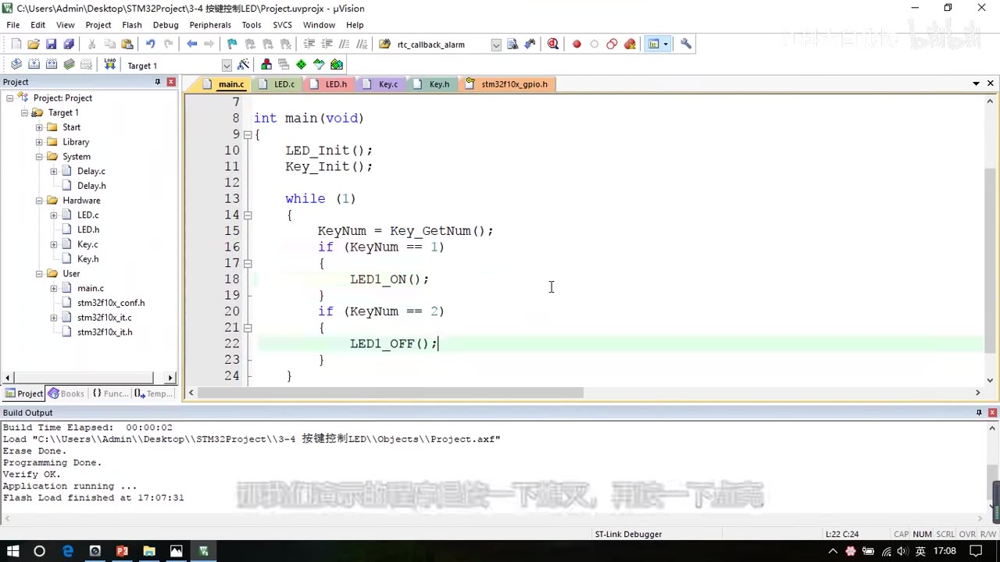
图 8：main.c 用 KeyNum 判断按键并直接控制 LED1_ON/LED1_OFF
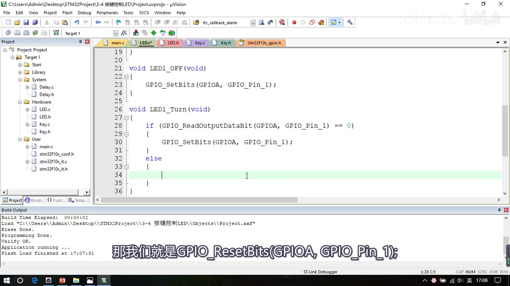
图 9：LED1_Turn 状态取反——读输出寄存器，0 则置 1，否则清 0
6. 工程 2：光敏传感器控制蜂鸣器
接线：蜂鸣器 VCC/GND 接电源、控制脚接 PB12；光敏传感器模块 VCC/GND 接电源、DO 数字输出接 PB13。
光敏传感器模块：4 针模块（VCC、GND、DO、AO），本课只用 DO 数字输出：
- 上电后模块上的指示灯亮；
- 遮住光线时，输出指示灯灭，代表 DO 输出高电平（1）；
- 松开（有光）时，输出指示灯亮，代表 DO 输出低电平（0）；
- 模块上的蓝色电位器可以调节高低电平的判断阈值。
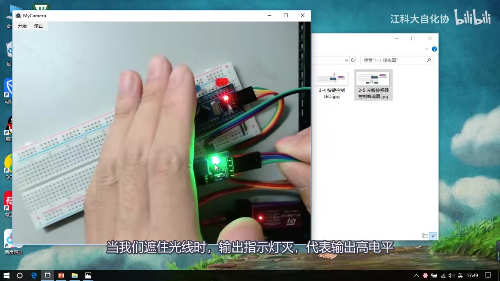
图 10：光敏传感器调试——手遮住光线时输出指示灯灭（DO 输出高电平）
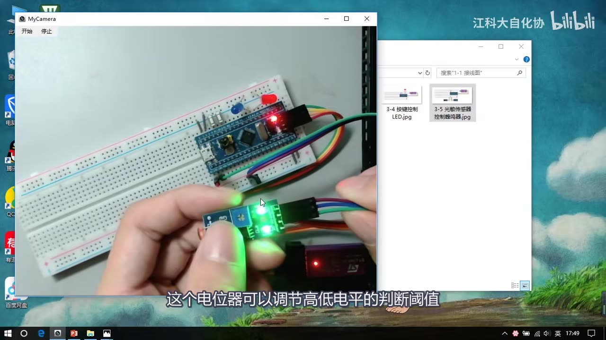
图 11：手持光敏传感器模块——蓝色电位器可调高低电平判断阈值
封装 Buzzer 驱动：复制 3-4 工程改名为 3-5 光敏传感器控制蜂鸣器，同样在 Hardware 下新建 Buzzer.c/h：
void Buzzer_Init(void)
{
RCC_APB2PeriphClockCmd(RCC_APB2Periph_GPIOB, ENABLE);
GPIO_InitTypeDef GPIO_InitStructure;
GPIO_InitStructure.GPIO_Mode = GPIO_Mode_Out_PP; // 推挽输出
GPIO_InitStructure.GPIO_Pin = GPIO_Pin_12; // PB12
GPIO_InitStructure.GPIO_Speed = GPIO_Speed_50MHz;
GPIO_Init(GPIOB, &GPIO_InitStructure);
GPIO_SetBits(GPIOB, GPIO_Pin_12); // 默认高电平，蜂鸣器不响
}
void Buzzer_ON(void) { GPIO_ResetBits(GPIOB, GPIO_Pin_12); } // 低电平触发响
void Buzzer_OFF(void) { GPIO_SetBits(GPIOB, GPIO_Pin_12); }
- 从 LED.c 复制驱动时还会带上
Buzzer_Turn函数（在 Buzzer.h 里声明），作用同样是读输出寄存器状态再翻转；视频里用while (1) { Buzzer_Turn(); Delay_ms(500); }测试，蜂鸣器会不断鸣响。
封装 LightSensor 驱动：
void LightSensor_Init(void)
{
RCC_APB2PeriphClockCmd(RCC_APB2Periph_GPIOB, ENABLE);
GPIO_InitTypeDef GPIO_InitStructure;
GPIO_InitStructure.GPIO_Mode = GPIO_Mode_IPU; // 上拉输入（模块常接也可用浮空输入）
GPIO_InitStructure.GPIO_Pin = GPIO_Pin_13; // PB13
GPIO_InitStructure.GPIO_Speed = GPIO_Speed_50MHz;
GPIO_Init(GPIOB, &GPIO_InitStructure);
}
uint8_t LightSensor_Get(void)
{
return GPIO_ReadInputDataBit(GPIOB, GPIO_Pin_13); // 直接返回端口电平
}
- 如果模块始终都连接在端口上，也可以选择浮空输入，只要保证引脚不会悬空即可。
main.c：
#include "Buzzer.h"
#include "LightSensor.h"
int main(void)
{
Buzzer_Init();
LightSensor_Init();
while (1)
{
if (LightSensor_Get() == 1) Buzzer_ON(); // 遮光（高电平）→ 响
else Buzzer_OFF(); // 有光（低电平）→ 不响
}
}
现象：遮住光敏电阻 → 蜂鸣器响；拿开 → 蜂鸣器不响。
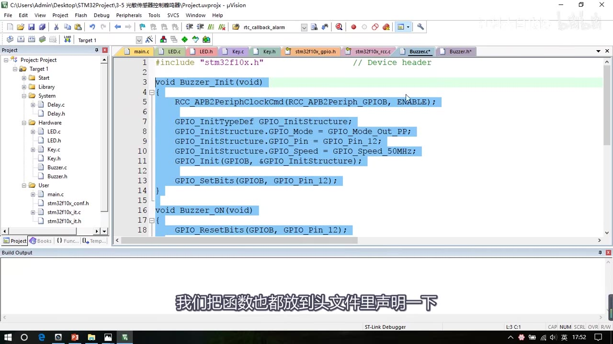
图 12：Buzzer.c 驱动——PB12 推挽输出、Init 末尾 SetBits 默认不响、Buzzer_ON 用 ResetBits
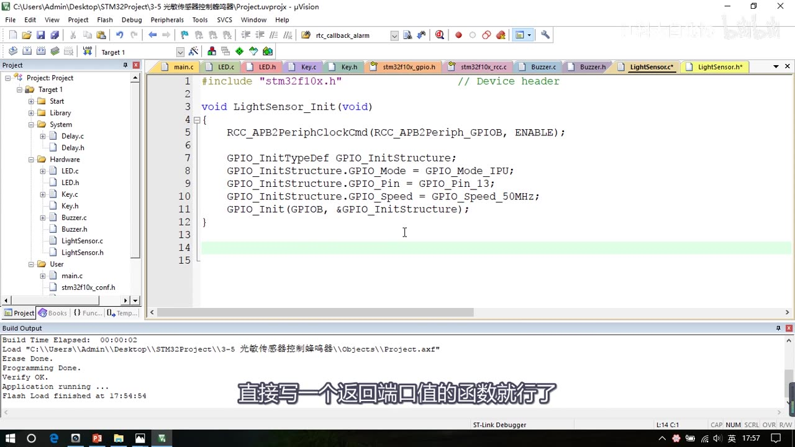
图 13：LightSensor_Init 完整代码（GPIOB 时钟、GPIO_Mode_IPU、Pin_13）
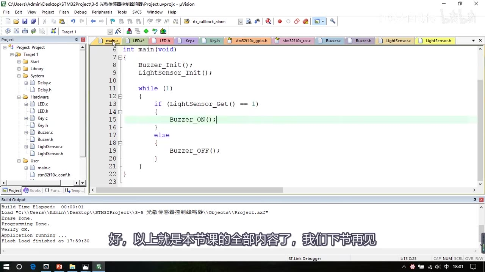
图 14：最终 main.c——初始化 Buzzer/LightSensor 后，用 LightSensor_Get()==1 判断响/不响
7. 本集总结：GPIO 使用三步
- 初始化时钟（
RCC_APB2PeriphClockCmd）； - 定义并赋值结构体：
GPIO_Mode选 8 种模式之一，GPIO_Pin可以用按位或同时选多个引脚，GPIO_Speed选输出速度（要求不高直接 50MHz）； - 调用
GPIO_Init初始化指定的 GPIO 外设。
- 读写 GPIO 口主要用 gpio.h 里的 8 个读写函数（4 个读 + 4 个写：
GPIO_SetBits/ResetBits/WriteBit/Write、GPIO_ReadInputDataBit/ReadInputData/ReadOutputDataBit/ReadOutputData）。 - 模块化编程：外围硬件多的时候，把每个硬件的驱动单独提取到
.c/.h，好处是简化主函数逻辑、方便移植、方便分工合作（别人写驱动、你专注主程序逻辑）。 - 函数注释：既然要做封装，函数注释就要写清楚（用途/参数/返回值），方便使用这个模块的人快速上手。
8. 坑与易错点
- 按键接 GND 就用上拉输入：按键一端接 GPIO、一端接 GND，按下读到 0；配置成
GPIO_Mode_IPU。 - 消抖必须做：
Delay_ms(20)→while等松手 →Delay_ms(20)，否则一次按下可能触发多次。 - 按键一般“松手后才动作”：用
while等松手，保证一次按下只触发一次。 - LED 默认低电平：GPIO 配置好后默认输出低电平，低电平点亮的 LED 会直接亮 → 在 Init 末尾
GPIO_SetBits设默认状态。 - 输入模式下 GPIO_Speed 没用但仍要填：结构体三个成员都要赋值，填 50MHz 即可。
.h防重复包含：#ifndef/#define/#endif三件套，声明放里面；.c第一行 includestm32f10x.h；文件最后留空行。- 模块内用到 Delay 要 include：Key.c 用
Delay_ms要#include "Delay.h"，否则报找不到文件。 - 全局/局部变量同名不同变量：main 的 KeyNum（全局）≠ Key.c 里的 KeyNum（局部），函数内优先用自己的局部变量。
- 光敏 DO 电平别记反：遮光 → DO 输出高电平(1)（指示灯灭）；有光 → 低电平(0)（指示灯亮）；阈值用蓝色电位器调。
- Keil 实时语法检查会滞后：偶尔报错/警告是语法检查更新慢，直接编译通过即可；Ctrl+Alt+空格 调代码提示。
时间轴
| 时间 | 内容 |
|---|---|
| 0:00 | 本小节写 GPIO 输入代码，先看第一个代码的接线图 |
| 0:16 | 接线：按键接 PB1/PB11（一端 GPIO 一端 GND）、LED 接 PA1/PA2（一端 VCC，低电平点亮）；面包板插接 |
| 1:25 | 复制蜂鸣器工程，改名 3-4 按键控制LED |
| 1:45 | 模块化编程：建 Hardware 文件夹、Keil 组、加头文件路径 |
| 3:02 | 新建 LED.c / LED.h，写 #ifndef 防重复包含框架 |
| 4:53 | 写 LED_Init |
| 8:20 | 下载后两灯都亮（GPIO 默认低电平）→ 在 Init 末尾加 GPIO_SetBits 设默认熄灭 |
| 9:04 | 写 LED1/2_ON/OFF，主函数交替闪烁验证 |
| 11:40 | 封装按键 Key.c / Key.h |
| 12:34 | Key_Init：GPIOB 时钟、上拉输入、Pin_1 / Pin_11 |
| 14:25 | 修正 Key_Init 拼写错误，开始写 Key_GetNum |
| 15:19 | 打开 gpio.h 讲 4 个读函数 |
| 16:43 | 对照位结构 PPT 讲这些读函数的用途 |
| 17:26 | 写 Key_GetNum：读键码 + 消抖 + 等松手 |
| 19:22 | main 按键控制 LED；状态取反函数 LED1_Turn |
| 23:33 | 驱动函数注释规范 |
| 24:07 | 第二个代码接线：蜂鸣器 PB12、光敏 DO 接 PB13 |
| 25:04 | 光敏模块调试：遮光/有光现象与电位器调阈值 |
| 25:22 | 复制 3-5 光敏传感器控制蜂鸣器，封装 Buzzer.c/h |
| 28:18 | 封装 LightSensor.c/h |
| 30:30 | main 用 LightSensor_Get() 控制蜂鸣器，验证现象 |
| 31:29 | 总结：GPIO 使用三步、8 个读写函数、模块化与注释 |
| 33:05 | 结束语 |
存疑
- 本集文本来自画面硬字幕的 OCR（PP-OCRv4，source=subtitle-ocr），不是 ASR；典型 OCR 错字（本集实际出现）：GPIO口→“GPIO回”、“include”→“indude”、“ReadInput”→“Readlnput”、“第三个”→“第个”、部分编译输出行乱码等，已按画面和上下文校正。
- 视频里 Keil 的编译输出行字号小、被 OCR 识别成乱码，不影响结论；最终各次编译均为 0 Error(s), 0 Warning(s)（画面可见；中途有拼写错误、Delay.h 找不到等报错，修正后通过）。
- 光敏模块的 AO 模拟输出本课未接线、未演示（只使用 DO 数字输出）。
Delay_ms函数来自工程里的Delay.c/h（System 组，课程前面已提供），本集没有展开它的实现。- 工程名、引脚（PB1/PB11、PA1/PA2、PB12/PB13）按视频画面记录，实际接线可按需求调整。